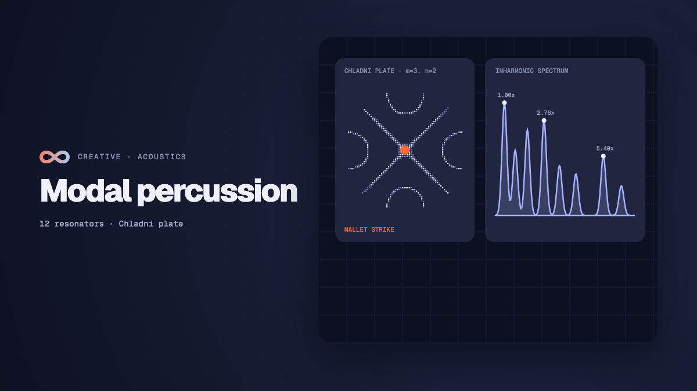

Creative
Modal synthesis and metallic percussion in real time
How real-time modal synthesis models metallic percussion: mallet strike exciters, banks of inharmonic second-order resonators, dispersive waveguides, and Chladni plates.

on this page
- What modal synthesis solves for struck metal
- The acoustic physics of vibrating bars, plates, and bells
- Mallet excitation and transient contact mechanics
- Second-order inharmonic resonator bank formulation
- Dispersive waveguides and allpass phase delay loops
- Material physics presets and acoustic modal ratios
- Audiovisual patching: coupling modal acoustics to 3D geometry
- Building a complete physical percussion instrument in Infinite
- Real-time execution constraints and performance bounds
Modal synthesis metallic percussion sound design simulates acoustic resonance by decomposing complex vibrating structures into independent resonant modes. Unlike acoustic strings and open cylindrical pipes, whose boundary conditions produce integer harmonic partials (such as 1f, 2f, 3f, and 4f), metallic objects like bells, struck rods, vibraphone bars, cymbals, and gongs exhibit strongly inharmonic frequency spectra.
When a mallet strikes a solid bronze bell or steel plate, energy distributes across dozens of vibrational modes simultaneously. Each mode oscillates at its own characteristic frequency, dissipates energy at a material-dependent decay rate, and responds to the hardness and velocity of the exciter.
In audiovisual modular environments like Infinite, physical modelling provides an expressive acoustic bridge between digital signal processing and procedural graphics. Because the underlying state variables (such as mode displacement, exciter velocity, and high-frequency dissipation) are calculated in real time on the audio thread, they can be routed directly into 3D mesh deformation, particle velocities, and shaders.
Here is an analysis of how real-time modal synthesis models metallic percussion, how mallet contact mechanics excite resonant structures, how second-order bandpass resonator banks are formulated, how dispersive waveguides reproduce high-frequency shimmer, and how to patch a complete metallic percussion synthesiser using native nodes.

What modal synthesis solves for struck metal
In acoustic percussion modelling, sound designers historically relied on two conventional techniques: sample playback and frequency modulation (FM) synthesis.
Sample libraries record acoustic instruments with fidelity, but they remain static snapshots. Sticking, damping, scraping, or striking an acoustic gong at varying distances from the rim requires dozens of velocity layers and round-robin samples. Even with extensive sample sets, phase cancellation and repetitive transients degrade acoustic realism during fast rolls or sustained strikes.
FM synthesis excels at producing metallic sidebands by modulating a sinusoidal carrier with another operator. However, FM sideband distribution follows Bessel functions of the first kind (J_n(beta)), where the partials are symmetrically spaced around the carrier frequency:
f_sideband = f_carrier +/- n * f_modulatorReal solid metals do not follow linear FM sideband symmetry. Their natural resonant frequencies arise from the physical stiffness and boundary conditions of elastic solids, producing wide, asymmetrical frequency spreads that sound unnatural when forced into FM operator ratios.
Modal synthesis resolves this by modelling the resonant body as a parallel bank of damped second-order resonators. Each filter represents one orthogonal physical vibrational mode. By configuring the frequency ratios, initial amplitudes, and decay times of each filter to match the analytical solutions of acoustic differential equations, modal synthesis reproduces the nuanced acoustic behaviour of struck metal with low computational overhead.
The acoustic physics of vibrating bars, plates, and bells
To model metallic percussion accurately, we must examine how acoustic waves propagate through different geometric structures: one-dimensional bars, two-dimensional plates, and three-dimensional bells.
Transverse vibrations in stiff bars (Euler-Bernoulli beam theory)
In an ideal flexible string, tension dominates restoring forces, producing harmonic overtones. In a stiff metallic bar (such as a glockenspiel or xylophone bar), shear stiffness and bending moments govern motion. The fourth-order Euler-Bernoulli partial differential equation describes this transverse displacement y(x, t):
rho * A * (d^2 y / dt^2) + E * I * (d^4 y / dx^4) = 0Where rho represents material density, A is cross-sectional area, E is Young's modulus of elasticity, and I is the area moment of inertia.
For a bar with free ends, the boundary conditions require zero bending moment and zero shear force at both boundaries. Solving this eigenvalue equation yields the modal frequencies:
f_n = (pi / (2 * L^2)) * sqrt((E * I) / (rho * A)) * m_n^2Where the modal constants m_n approximately equal:
m_1 = 3.0112, m_2 = 5.0000, m_3 = 7.0000, m_4 = 9.0000Normalising by the fundamental frequency f_1, the modal frequency ratios for an ideal free-free metallic bar become:
f_1 / f_1 = 1.000
f_2 / f_1 = (5.000 / 3.0112)^2 = 2.756
f_3 / f_1 = (7.000 / 3.0112)^2 = 5.404
f_4 / f_1 = (9.000 / 3.0112)^2 = 8.933
f_5 / f_1 = (11.00 / 3.0112)^2 = 13.344Notice that the second mode is nearly 2.76 times the fundamental, and the third mode is over 5.4 times the fundamental. This progressive widening of partial spacing creates the bright, bell-like timbre of struck steel.
Two-dimensional circular plates and Chladni figures
When energy disperses across a circular bronze plate, cymbal, or gong, waves propagate radially and azimuthally. Ernst Chladni demonstrated that sand scattered on vibrating plates gathers along stationary nodal lines and nodal circles.
The governing equation for a vibrating thin plate of thickness h is Poisson's plate equation:
D * nabla^4 w + rho * h * (d^2 w / dt^2) = 0Where D = (E * h^3) / (12 * (1 - nu^2)) is the flexural rigidity and nu is Poisson's ratio. In polar coordinates, the spatial mode shapes are given by combinations of ordinary and modified Bessel functions:
w_mn(r, theta) = [A * J_m(k * r) + B * I_m(k * r)] * cos(m * theta)The modal frequencies correspond to the roots of the transcendental boundary equation. For a circular plate clamped at the centre and free at the edge (typical of a suspended cymbal or small gong), the resulting modal ratios deviate sharply from integer multiples:
f_01 / f_01 = 1.000 (fundamental mode)
f_11 / f_01 = 1.482 (one nodal diameter)
f_21 / f_01 = 2.045 (two nodal diameters)
f_02 / f_01 = 2.684 (one nodal circle)
f_31 / f_01 = 3.420 (three nodal diameters)
f_12 / f_01 = 4.250 (one diameter, one circle)These clustered, closely spaced inharmonic ratios produce the dense shimmering wash and acoustic turbulence characteristic of cymbals and tam-tams.
The acoustic hierarchy of tuned church bells
Tuned bells (such as carillons and orchestral chimes) represent a specialised branch of acoustics. Bell founders shape the bronze casting profile so that five key partials align into a musically consonant structure:
- Hum tone (
0.5 * f_0): One octave below the strike note. - Prime (
1.0 * f_0): The nominal pitch of the bell. - Tierce (
1.189 * f_0): A minor third above the prime, giving European bells their melancholic quality. - Quint (
1.5 * f_0): A perfect fifth above the prime. - Nominal (
2.0 * f_0): One octave above the prime, which governs the perceived strike pitch.
Higher modes (supernominal at 2.74x, octave nominal at 4.0x) decay rapidly, while the lower hum tone and prime ring for seconds.
Mallet excitation and transient contact mechanics
The sound of struck metal depends heavily on the exciter. Striking a bell with a hard brass rod produces a sharp transient rich in high frequencies. Striking the same bell with a soft felt mallet yields a rounded, deep resonance with minimal high-frequency content.
Raised-cosine contact model
In physical acoustics, mallet impact can be approximated as an elastic sphere contacting a surface. According to Hertzian contact mechanics, the contact duration tau varies inversely with strike velocity v_0:
tau proportional to v_0^(-1/5)For real-time synthesiser architectures, a raised-cosine impulse function simulates the mallet contact force p(t) over contact duration T_c:
p(t) = 0.5 * [1 - cos((2 * pi * t) / T_c)] for 0 <= t <= T_c
p(t) = 0 for t > T_cThe Fourier transform of this raised-cosine pulse exhibits spectral nulls at multiples of 1 / T_c:
P(f) = (sin(pi * f * T_c) / (pi * f * T_c)) * (1 / (1 - (f * T_c)^2))When the mallet is hard, T_c is short (around 0.5 to 1.5 milliseconds), pushing the spectral cutoff well into the ultrasonic range and exciting every high mode. When the mallet is soft, T_c lengthens to 8 to 20 milliseconds, filtering out high frequencies before they reach the resonator bank.
In Infinite's Metallic node, the transient parameter controls both the mallet strike hardness and the injection of a micro-burst of band-limited noise into the resonators, simulating the physical scrape and impact of the mallet head.
Second-order inharmonic resonator bank formulation
To compute modal resonance efficiently on digital hardware, each mode is implemented as a two-pole digital bandpass filter.
Continuous to discrete transformation
The continuous-time transfer function of a single damped mechanical oscillator is:
H(s) = (omega_0 / Q) * s / (s^2 + (omega_0 / Q) * s + omega_0^2)Applying the impulse invariant transform or matched z-transform yields the canonical second-order infinite impulse response (IIR) filter:
y[n] = 2 * r * cos(theta) * y[n-1] - r^2 * y[n-2] + b_0 * (x[n] - r * cos(theta) * x[n-1])Where:
omega_0 = 2 * pi * f_mode / f_sis the normalised angular frequency at sample ratef_s.r = exp(-pi * B / f_s)represents the pole radius, whereBis the -3 dB resonance bandwidth in Hertz.theta = omega_0 * sqrt(1 - 1 / (4 * Q^2))is the pole angle.b_0 = (1 - r^2) * sin(theta)normalises the peak gain to unity at the resonant frequency.
Mode decoupling and parallel execution
In real-time processing, evaluating 12 independent second-order filters in parallel offers numerical stability. Unlike cascade filters, where small coefficient roundoff errors can propagate and cause instability, parallel resonators run independently:
y_total[n] = sum_{m=0}^{M-1} g_m * y_m[n]Where g_m is the excitation gain for mode m.
Frequency-dependent damping
In solid metals, high-frequency modes dissipate energy faster than low-frequency modes due to internal thermoelastic friction and acoustic radiation into the surrounding air. The decay time tau_m of each mode scales with frequency:
tau_m = tau_base * (f_0 / f_m)^alphaWhere alpha represents the material loss coefficient (typically 0.2 to 0.8 for metals, 1.2 to 1.8 for wood or ceramic). By applying this frequency-dependent damping curve across the resonator bank, high partials ring out quickly while the fundamental and lower modes sustain for several seconds.
Dispersive waveguides and allpass phase delay loops
While a 12-mode resonator bank accurately captures the discrete lower and middle partials of metallic bodies, dense high-frequency energy (above 6 kHz) requires hundreds of closely packed modes. Evaluating hundreds of discrete filters per voice strains CPU budgets.
To solve this, modal synthesis can be paired with an extended Karplus-Strong waveguide featuring allpass dispersion filters.
An ideal delay line recirculates audio with uniform delay across all frequencies. In a stiff metallic medium, however, wave propagation velocity increases with frequency:
v_phase(f) = sqrt(2 * pi * f) * ((E * I) / (rho * A))^(1/4)Higher frequencies travel faster than lower frequencies. To model this dispersion in discrete time, a cascade of first-order allpass filters is inserted into the feedback loop:
A(z) = (a + z^-1) / (1 + a * z^-1)The group delay tau_g(omega) of this allpass filter varies with frequency:
tau_g(omega) = - d(phi) / d(omega) = (1 - a^2) / (1 + 2 * a * cos(omega) + a^2)When a > 0, high frequencies experience shorter phase delay through the loop than low frequencies. As the strike transient recirculates through the waveguide, the impulse stretches out into a dispersed chirp, creating the characteristic metallic ringing tail found in metal rods and sheet springs.
Material physics presets and acoustic modal ratios
Infinite's Metallic node packages these mathematical foundations into eight material presets, each defining distinct mode ratios, decay times, and dispersion strengths.
Preset comparison
- Steel (
kSteel): Modeled on Euler-Bernoulli clamped bar ratios (1.00, 2.76, 5.40, 8.93, 13.34, 18.64...). Stiffness is set to 0.25, producing clear, bright overtones with moderate dispersion and clean harmonic decay. - Bell Bronze (
kBell): Incorporates tuned church bell ratios (hum 0.50x, prime 1.00x, minor third tierce 1.189x, quint 1.50x, nominal 2.00x, supernominal 2.74x). Delivers a long 3.5-second sustain with minor-third beating. - Gong / Plate (
kGong): Based on two-dimensional Chladni circular plate modes (1.00, 1.48, 2.05, 2.68, 3.42, 4.25...). Features high dispersion (0.70) and nonlinear detuning (0.012) to simulate modal collisions and wash. - Cast Iron (
kIron): Features heavy high-frequency loss (0.85) and short 1.2-second decay. Models heavy machinery, anvils, and thick industrial plates. - Titanium (
kTitanium): High stiffness (0.60) and minimal high-frequency damping (0.18). Produces an ultra-bright, piercing resonance with a 2.8-second decay. - Glass / Crystal (
kGlass): Extremely low high-frequency loss (0.12) with pure, crystalline modal ratios. Simulates struck wine glasses and crystal singing bowls. - Ceramic (
kCeramic): Rapid high-frequency decay (1.10) with dry, hollow wooden-metallic overtones resembling marimba bars or porcelain tiles. - Vibraphone Bar (
kVibraphone): Tuned bar with an undercut arch profile, aligning the second mode to the fourth harmonic (4.00x) rather than the standard 2.76x of uniform bars.
Audiovisual patching: coupling modal acoustics to 3D geometry
Because Infinite executes both audio DSP and 3D graphics inside a unified graph, physical modal parameters can modulate procedural geometry in real time.
[Note Sequencer] ---> (notes) ---> [Metallic] ---> (audio) ---> [Gain] ---> [Audio Output]
|
+---> [Audio Analyze]
|
(rms / peak / pitch)
|
v
[Mesh (Plate)] ---> [Audio Displacement] <----------+
|
v
[Render 3D]Visualising Chladni nodal figures in 3D
To visualise the acoustic modes directly on a procedural surface:
- Spawn a
Metallicnode and select theBell BronzeorGong / Platematerial preset. - Connect a
Note Sequencernode to thenotesinput slot ofMetallicto drive rhythmic strikes with varying velocity. - Route the audio output of
Metallicinto anAudio Analyzenode. - Spawn a
Geometrynode set to a high-resolution subdivided cylinder or plane (representing the physical plate). - Cable the geometry into an
Audio Displacementnode. - Patch the
spectralRmsor mode outputs fromAudio Analyzeinto the displacement amplitude and frequency slots. - As the
Metallicnode sounds, the surface vertices deform along the theoretical Bessel nodal rings. High-velocity strikes create dramatic surface ripples, which smoothly settle into stationary nodal rings as the modes decay.
You can explore functional examples of physical modelling and geometry patching in the Infinite patch library.
Building a complete physical percussion instrument in Infinite
Here is the step-by-step procedure to construct a complete, playable metallic percussion instrument from scratch:
1. Exciter and sequencing setup
Create a Note Sequencer node. Set division to 1/16 sync and dial length to 16 steps. Program an uneven rhythmic pattern with varied velocity steps.
Add a Random modulator node. Set its distribution to Gaussian, rate to 1/8 bar, and smoothing to 45 ms. Route this random value into the transient parameter of Metallic. Each strike now hits with a slightly different mallet snap and contact duration, avoiding repetitive transients.
2. Tuning and material selection
Open the Metallic node. Select Bell Bronze for deep metallic resonance, or Steel for bright melodic percussion. Set frequency to 220 Hz (A3).
If controlling via an external keyboard or MIDI controller, patch a MIDI Notes node into the notes slot. Metallic supports up to 8 polyphonic voices, tracking pitch across standard MIDI note numbers while maintaining inharmonic modal ratios.
3. Spatialisation and dynamics
Route Metallic's stereo output into a Gain node. Attenuate the master gain by -3.5 dB to prevent clipping during dense polyphonic strikes.
Add an Audio Filter node configured as a subtle high-shelf cut around 12 kHz to emulate room acoustic absorption, or apply subtle saturation using Gain's soft drive.
4. Interactive scope monitoring
Metallic features an integrated real-time oscilloscope in its node body. By observing the trace during a strike, you can visually monitor how the initial mallet transient gives way to sinusoidal modal decay. The node publishes decimated peak waveforms directly to the UI thread via ReadScope, ensuring visual feedback without audio dropouts.
Real-time execution constraints and performance bounds
Physical modelling synthesis requires strict computational discipline to ensure glitch-free audio execution.
In Infinite's audio engine:
- The 12-mode resonator bank runs inside the audio callback at 44.1 kHz or 48 kHz.
- Filter calculations use SIMD vectorisation where available, updating 12 poles and zeros in parallel chunks.
- Parameter updates (such as
decay,stiffness, andfrequency) are delivered from the UI thread to the audio thread via atomic mailboxes (ParamMailbox), avoiding thread locks or memory allocation. - Voice allocation is handled dynamically: idle voices whose energy drops below -96 dB are put to sleep, keeping CPU utilisation under 2.5% on modern processors.
By combining the mathematical precision of acoustic wave equations with real-time modulation, modal synthesis transforms metallic percussion from static sampled hits into responsive, living acoustic instruments.